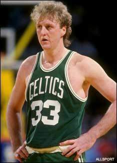
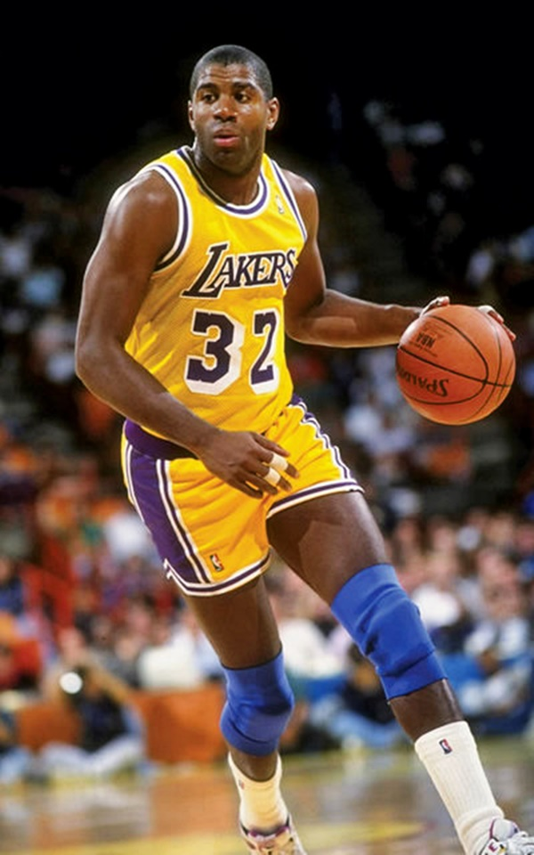
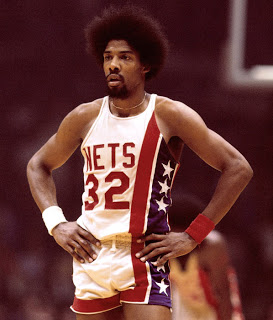

|  | Apodos | Larry Legend |
| Nº elegido en el Draft | 6 (1978) |
| Equipos | Boston Celtics |
| Nº veces Campeón NBA | 3 |
| Nº veces MVP | 3 |
| Nº veces MVP Finales | 2 |
| Nº veces All-Star | 12 |
| Años en activo | 1979-1992 |
|
|  | Apodos | Magic |
| Nº elegido en el Draft | 1 (1979) |
| Equipos | Angeles Lakers |
| Nº veces Campeón NBA | 5 |
| Nº veces MVP | 3 |
| Nº veces MVP Finales | 3 |
| Nº veces All-Star | 12 |
| Años en activo | (1979-1991, 1996) |
|
|  | Apodos | Dr. J |
| Nº elegido en el Draft | 12 (1972) |
| Equipos | Nets y 76ers |
| Nº veces Campeón NBA | 3 |
| Nº veces MVP | 4 |
| Nº veces MVP Finales | 0 |
| Nº veces All-Star | 11 |
| Años en activo | 1971-1987 |
|